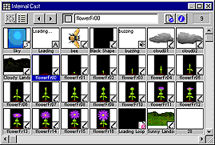
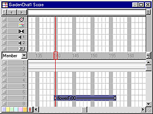
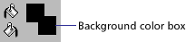
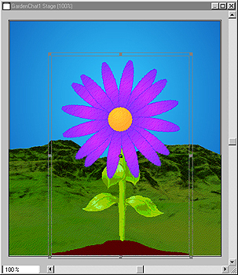

Using Director > Director 8 Tutorial > Create frame-by-frame animation
Using Director > Director 8 Tutorial > Create frame-by-frame animation |
Create frame-by-frame animation
A sprite is often an instance of a single cast member on the Stage or in the Score. However, one sprite can also include several cast members. In addition to using multiple sprites to create animation, you can use multiple cast members within a single sprite. Animation that uses multiple cast members is called frame-by-frame animation. This technique offers a way to create animation that is more complex than simple tweened animation.
Change the order of cast members
You can create frame-by-frame animation several different ways in Director. For this tutorial, you'll use the Cast to Time method, which lets you move a series of cast members to the Score as a single sprite.
To prepare for the Cast to Time method of animation, your cast members must appear in the Cast window in the same order that they'll appear in the animation. In the Cast Thumbnail view, notice that the first flower graphic, flowerFr00, is out of sequence.
1 |
If you are not already in the Cast Thumbnail window, click the Cast View Style icon. |
2 |
Drag the thumbnail of flowerFr00 on top of flowerFr01. |
The flowerFr00 thumbnail takes the position flowerFr01 occupied, and flowerFr00 becomes the first flower in the group of flowers. The numbers the Cast window assigns to the cast members reflects the new order.
 |
|
1 |
Select frame 140 of channel 7 in the Score. |
2 |
With the Cast window active, verify that the flower bitmaps are in order according to their title (flowerFr00, flowerFr01, flowerFr02...). |
3 |
Select all of the flowers by Shift-clicking the first flower in the series, flowerFr00, and Shift-clicking the last flower (flowerFr16). |
4 |
Choose Modify > Cast to Time, or press Alt (Windows) or Option (Macintosh) while dragging the cast members to the Stage. |
The flowers appear as a single sprite in the selected Score frame.
 |
|
By default, Background Transparent ink is set to turn white bounding rectangles transparent. With the flower sprite, the background is black. You can set Director to make the black background transparent. |
|
5 |
With the flower sprite selected, go to the Sprite tab of the Property Inspector. Click the Background Color box and select black.
 |
6 |
Set the sprite's ink to Background Transparent. |
7 |
In the Score, move the playback head to frame 165. |
8 |
On the Stage, select and drag the flower sprite to the bottom center edge of the window.
 |
9 |
Extend the flower sprite in the Score to frame 180. |
10 |
Rewind and play the movie. |